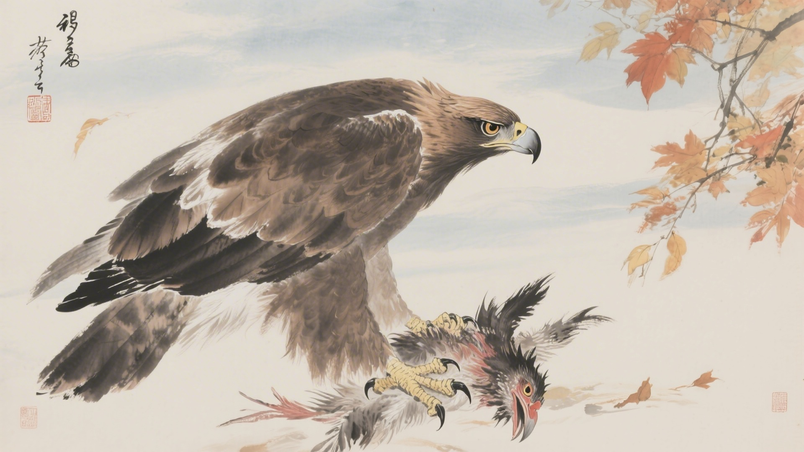
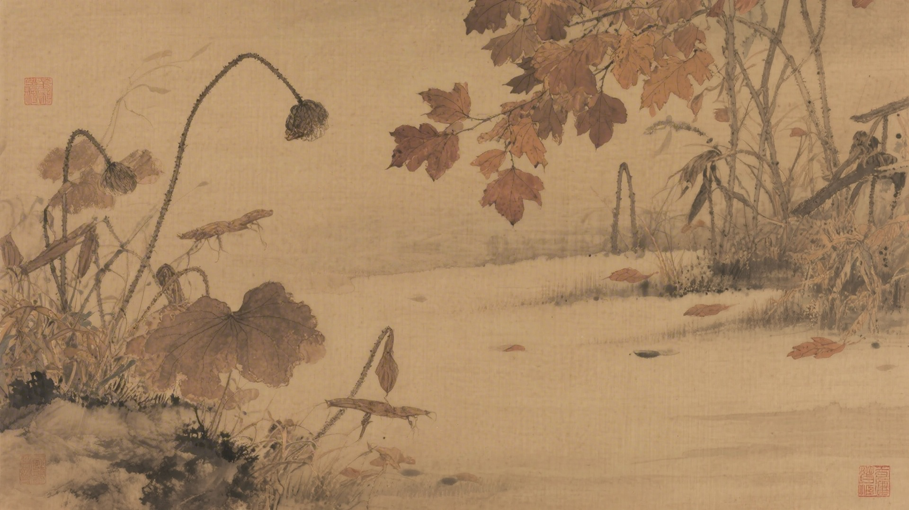
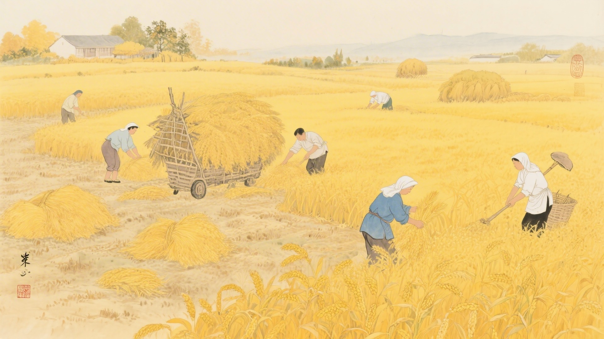
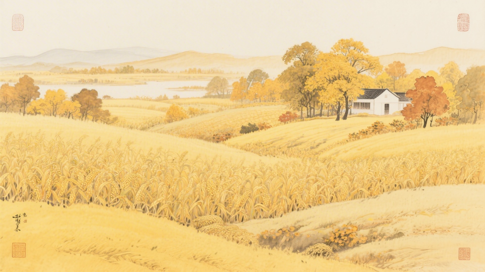
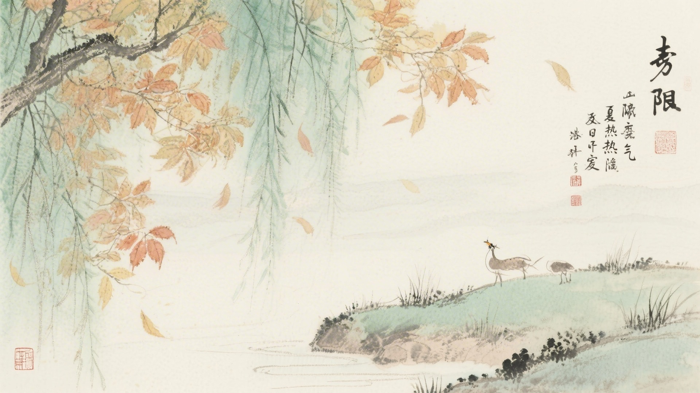

《中国传统色：故宫里的色彩美学》一书中为什么把下面这些颜色归入处暑节气？
退红、樱花、丁香、木槿
余白、兰苕、碧滋、葱倩
云门、西子、天水碧、法翠
桑蕾、太一余粮、秋香、老茯神
处暑到了，暑气开始消退。老鹰开始捕猎，天地万物肃杀，庄稼成熟收割。古人说处暑有三候：鹰乃祭鸟，天地始肃，禾乃登。这十六种颜色，便从这三候里来。
处暑的"处"，是终止的意思。暑气到了尽头，凉意开始抬头。颜色也跟着消退，红的退成粉，绿的退成青，像是夏天在做最后的告别。
对应：处暑节气一候"鹰乃祭鸟"的起、承、转、合四色。
色彩意象：老鹰捕猎，杀气暗藏。
从粉红到淡紫，是暑气消退的色彩变化，也是处暑时节最柔和的过渡。

对应：处暑节气二候"天地始肃"的起、承、转、合四色。
色彩意象：天地肃杀，秋意渐深。
从留白到青翠，是天地肃杀前的最后生机，也是处暑时节最清新的色彩。

对应：处暑节气三候"禾乃登"的起、承、转、合四色（其一）。
色彩意象：庄稼成熟，收割在望。
从青绿到碧蓝，是庄稼成熟的色彩变化，也是处暑时节最丰收的景象。

对应：处暑节气三候"禾乃登"的起、承、转、合四色（其二）。
色彩意象：秋收时节，金黄满地。
从淡黄到深褐，是秋收完成的色彩变化，也是处暑时节最温暖的画面。

处暑这天，暑气终于要退了。热了这么久，终于凉下来。颜色也跟着松一口气，不用再那么浓，不用再那么艳，可以淡一点，可以素一点。

颜色也懂得退场。它们知道，夏天的颜色该退了，秋天的颜色该上了。于是红的退成粉，绿的退成黄，像是旧衣服洗了几水，颜色淡了，却更舒服了。
（以上解读不代表原书观点）